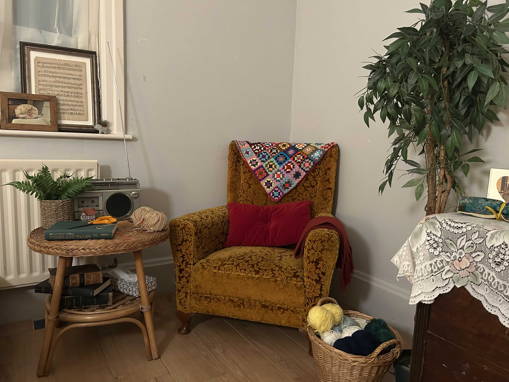
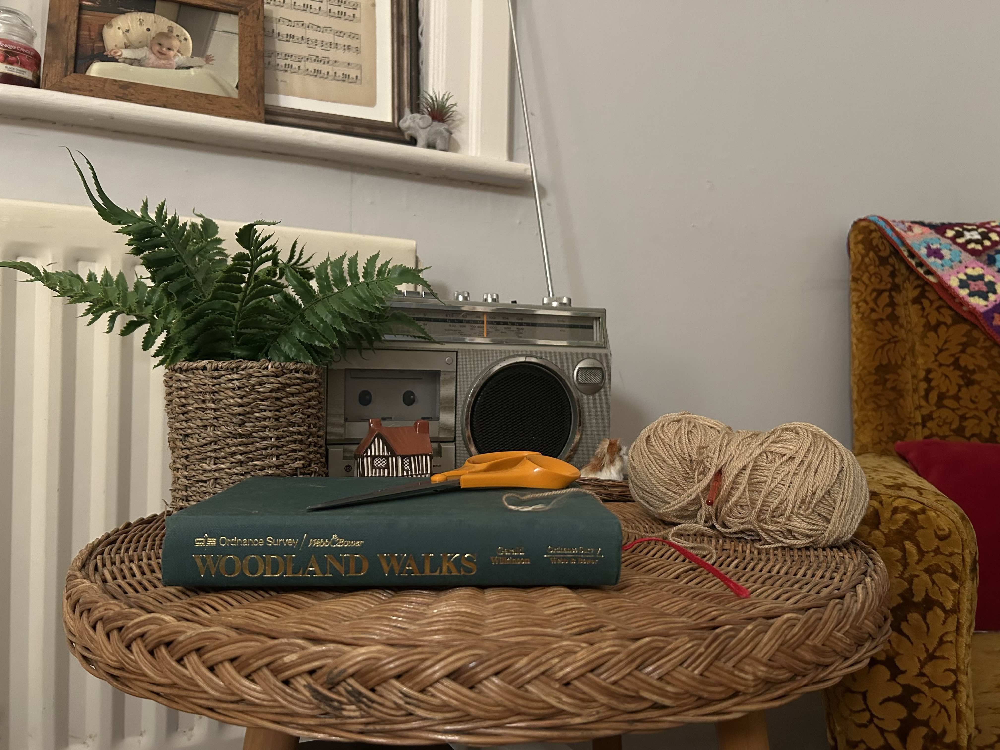

Arm Chair with Crochet Blanket: It was crucial for Doris when she moved into the care home that she had somewhere she could sit and do knitting and crochet. On the arm chair is a crochet blanket she made and a nice comfy cushion. This is one of her favourite spots and she will often spend hours here listening to music, reading and working on her craft projects.
Basket of Yarn: Doris's favourite pass time is knitting and crochet. So she has a basket of yarn by her arm chair. She spends hours working on her projects here and she often sends her creations to her family.

Classic Tape Recorder: This is one of the other things that Doris still has of Albert's (her late husband). He was always a big fan of music and they had a great day learning how to use the player together and dancing around the kitchen in the house they lived in together. When she crochets she often will put on a tape to listen to.
Woodland Walks Book: There aren't that many of Alberts things in her room as she gave a lot to her children and grandchildren. As having these items was just too much for her. There are only a few things of Alberts in her room, there is a picture from their wedding day, a tape recorder and this book on woodland walks. This was one of his favourite books as he loved bird watching. Every Sunday he would go on a bird watching walk and he was determined to do all the walks in the book.
Working Yarn: On the side table is her working yarn, I wanted to make this space look lived in and I felt like she would always have some kind of project on the go so I left some yarn on the side which she is working with.